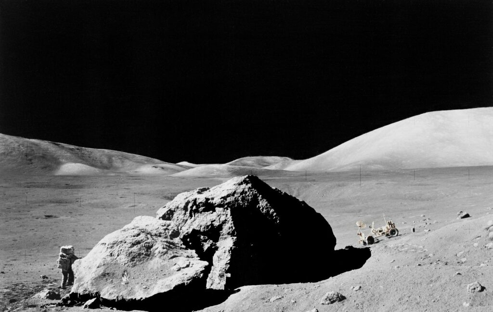
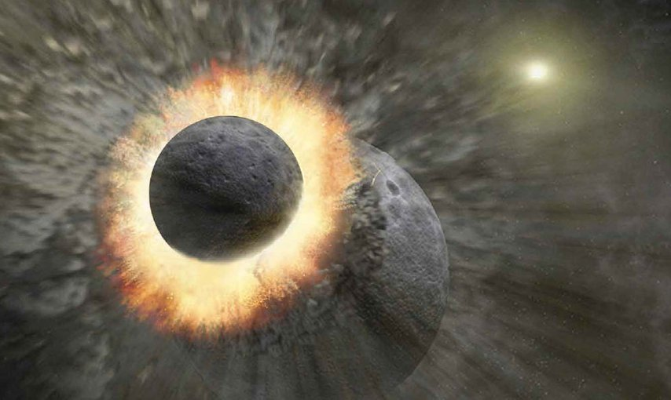

Você sabe como a lua foi formada?
Desde a antiguidade, a Lua desperta a curiosidade dos homens. Para os guaranis, uma das mais representativas etnias indígenas das Américas, a Lua era uma deusa chamada Jaci, protetora das plantas, dos amantes e da reprodução. Mitologicamente, Jaci é identificada com Diana dos romanos, Xochiquetzal dos astecas, Chandra dos hindus e Ísis dos antigos egípcios.
A civilização maia, povo pré-colombiano da América Central que teve seu auge durante o período de 250 d.C. a 900 d.C, também relacionava a Lua à feminilidade e à fertilidade. Eles possuíam conhecimentos avançados em Astronomia e Matemática e mapearam o movimento da Lua com extrema precisão.
Em nossa história recente, enviamos astronautas à Lua para estudá-la melhor, tal fascínio ela nos desperta. Com toda essa admiração ao longo da história da humanidade, somos levados a nos perguntar: como surgiu a Lua? Diversas teorias já surgiram a respeito.
Teoria de Co-Acréscimo
Propõe que a Lua se formou ao redor da Terra logo no início da formação do nosso sistema solar. Depois da formação da Terra, teria sobrado material – que ficou gravitando em volta dela e, com o tempo, acabou se aglomerando e formando a Lua. A justificativa para validar essa ideia é que o satélite e nosso planeta têm algumas características em comum, como a idade das rochas existentes em ambas as superfícies. Porém, há diferenças significativas que ficam sem explicação, como a menor quantidade de ferro encontrada em solo lunar.
Teoria da Captura
Propõe que a Lua teria se formado longe da Terra, mas teria sido capturada pela força gravitacional do nosso planeta ao passar por perto dele. Porém, cálculos demonstram que tal captura pela atração gravitacional da Terra é praticamente impossível para um objeto tão grande quanto a Lua.
Teoria da Fissão
Segundo ela, a Lua e a Terra seriam inicialmente um corpo só e nosso satélite teria se soltado da Terra. Ainda incandescente, a Terra teria começado a girar em torno de si mesma, com velocidade muito maior à que ocorre hoje, e assim pedaços ainda quentes foram jogados para longe. A teoria alega que a região do oceano Pacífico corresponde ao pedaço que formou a Lua. A ideia não é muito aceita porque o espaço oceânico não seria suficiente para compor um astro das dimensões da Lua e, se ela tivesse realmente se desprendido da Terra, sua órbita seria outra.
Teoria da Grande Colisão
A principal teoria de formação da Lua é de 1975 e considera que um corpo celeste do tamanho de Marte, chamado Theia, colidiu com a Terra há cerca de 4,5 bilhões de anos, quando nosso planeta ainda estava em formação e era uma grande bola pastosa e quente. Um pedaço do globo terrestre teria se soltado e formado a Lua.
Há ainda variações da teoria, que consideram que vários detritos dessa colisão se acumularam ao redor da Terra e, com o tempo, devido às forças gravitacionais, se juntaram e eventualmente formaram a Lua.
Essa Lua primordial era bem diferente de nosso satélite atual, pois ainda estava em estado de fusão, ou seja, era formada de magma não solidificado, que, com o tempo, foi se cristalizando. A Lua também girava muito mais rápido do que hoje. Porém, devido à interação gravitacional do sistema Terra-Lua, suas velocidades de translação e rotação diminuíram ao ponto de se tornarem iguais, mantendo, assim, a mesma face da Lua em direção ao nosso planeta. É por isso que sempre vemos o mesmo lado do nosso satélite natural.
Teoria das Múltiplas colisões
Propõe que, ao invés de uma única colisão colossal, uma série de impactos criou luas em miniatura em grande parte a partir de material terrestre. Essas mini luas se fundiram ao longo do tempo para formar uma grande lua. Essa é a hipótese mais recente, de um estudo publicado em 2017 na revista científica “Nature Geoscience”.
Mesmo que ainda não saibamos com certeza como se deu a formação da Lua, podemos estar certos de que nossas vidas seriam totalmente diferentes caso nosso satélite não existisse. Mas isso será assunto para um texto futuro! Por isso, fique ligado no Blog do Espaço!